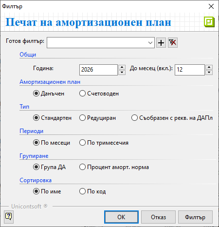
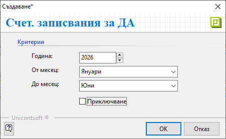

Дълготрайни активи#
Настройки#
Дълготрайни активи е отделна номенклатура, която системата третира аналогично на Продукти и материали и затова попадат в общ списък. Така, въпреки специфичните си настройки, активите може да се използват в документите за покупка и продажба.
При въвеждането на ДА системата изисква някои задължителни реквизити, отбелязани с червен маркер. Такива са наименование на ДА, стойност и дата на придобиване, дата на въвеждане в експлоатация, счетоводна група и категория(по чл. 55 от ЗКПО).
Счетоводни групи, методи за амортизация, коефициент на преоценка и категории по чл.55 (ЗКПО) могат да бъдат въведени и редактирани от Номенклатури » Референтни номенклатури. Тези настрийки са базови за ДА и трябва да се направят преди създаването на нов актив.
Нека въведем в системата един примерен актив - Лек автомобил, който попада в Категория V с амортизационната норма 25% на година.
Автомобилът е закупен на 23.04.2024 г. за 19940,38 евро и въведен в експлоатация на 01.05.2024 г.

Препоръчително е да запишете въведените до момента данни, преди да продължите с настройките.
В Допълнителни системата е попълнила автоматично задължителните полета, свързани с данъчния и със счетоводния амортизационен план.
Тук може да добавите също сума за неамортизируема остатъчна стойност на ДА.
Tip
За “ДА” могат да се настроят също и различни дименсии, както е при Продукти и материали.

На третия панел Списъци ще откриете настройки за подобрения, консервации и амортизационните норми и план на ДА.
Докато първите две са възможни при определени обстоятелства, то амортизацията е неизбежна след пускане на актива в експлоатация.
Затова следва да направите нужните настройки за амортизационни норми и амортизационен план.
Използвайки бутона [Генериране] в лентата с инструменти ще изберете амортизационна норма (или период на експлоатация) и метод на амортизация.
{kind=link}
Системата предлага по подразбиране Линеен метод на амортизация. При него годишните амортизационни квоти са еднакви за целия амортизационен период.
За генерацията на амортизационен план трябва да попълните или поле Период на експлоатация, или Амортизационна норма. След което потвърждавате избора и записвате промените.

Вече може да разгледате генерираните примерни амортизационни планове за този ДА - данъчен и счетоводен.

Tip
Ако пожелаете да редактирате амортизационните норми в избран ДА, респ. амортизационния му план, може да повторите описаната вече генерация.
Системата дава възможност за избор от следните методи на амортизация:
Константно дегресивен метод със снижаващ се остатък.
Линеен метод с годишните амортизационни квоти, които са еднакви за целия амортизационен период.
Метод на сумата на числата
Неравномерно дегресивен метод
Прогресивен нелинеен метод
Произволен метод
Амортизация на ДА#
Генерираните в системата амортизационни планове могат да бъдат видени отделно за всеки актив. Както споменахме, това става във формата за редакция на избрания ДА.
Също така има справка, включваща всички активи, достъпна в Счетоводство » Печат на амортизационен план.
Във филтъра може да изберете вида и типа на амортизационния план, период и други.

Справката, която се зарежда според настроените филтри, включва всички ДА със състояние Активен.
{kind=link}
Системата разполага с инструмент за автоматична генерация на счетоводни документи с предложените амортизационни квоти. Намира се в меню Счетоводство » Генерация на ДА.
За да бъдат създадени счетоводни записвания за всички активни ДА, трябва да потвърдите желания период.
Ако поставите отметка за Приключване, системата ще валидира счетоводните документи. Пропуснете тази настройка, ако предпочитате да приключите документите ръчно, след като сте проверили тяхното съдържание.

По този начин в меню Счетоводство » Счетоводни документи са генерирани по месеци документи от тип АмПл.
От момента на приключването им, данните в тях ще бъдат видими в счетоводните справки.
{kind=link}
Първоначално придобиване на ДА#
Първоначалното придобиване на ДА се отразява в системата с въвеждане на документа за неговата покупка. Ако предварително не сте създали актива като номенклатура, може да го направите и по време на обработка на покупката.
Ще покажем такова въвеждане на ДА с примерна фактура за покупка на лаптоп Lenovo на стойност 950 евро.
За целта в Търговска система » Документи за покупка създавате нов документ.
В този случай отново важи правилото, когато работите с вътрешнофирмени документи, да започнете с документ тип Покупка.
За да въведете ДА, на реда за нов запис отваряте списъка с продукти. Създавате нов продукт Лаптоп Lenovo от бутона в лентата с инструменти или с десен бутон на мишката - Нов продукт.
Обзавеждате нужните реквизити, след което записвате настройката.
Имайте предвид, че за да настроите поле Тип, предварително в Референтни номенклатури трябва да сте въвели типове продукти.

В списъка с продукти вече фигурира Лаптоп lenovo, като ще забележите разлика между неговата икона и тези на вече въведени ДА. Така системата разграничава номенклатурите, отговарящи на специфичните изисквания и настроени като ДА.
Въведените ДА през Номенклатури » Дълготрайни активи се визуализират и в списък Продукти и материали.
Обратното не е валидно.
{kind=link}
Според разпределените роли и правата в системата е възможно номенклатурата Дълготрайни активи да не е достъпна за всеки.
Именно затова, до момента имате въведен Лаптоп Lenovo като продукт, което е достатъчно да завършите въвеждането на покупката.
{kind=link}
На следващ етап настройката на продукта Лаптоп Lenovo трябва да бъде довършена, така че системата да го третира като дълготраен актив.
Това става от списък Продукти и материали. С десен бутон на мишката върху продукта избирате Други средства » Редакция ДА.
{kind=link}
В отворената форма за редакция добавяте настройките, показани в началото на темата.
Печат на протокол за въвеждане в експлоатация#
Системата дава възможност за печат на Протокол за въвеждане в експлоатация на дълготраен амортизируем актив, съгл. чл. 58 от ЗКПО.
За целта, от картон на ДА (форма за редакция на ДА) използвайте бутоните Преглед или Печат от лентата с инструменти. Автоматично в протокола се обзавеждат нужните полета според настроените в ДА данни.

Консервации на ДА#
Когато дълготраен актив е изведен от употреба за минимум дванадесет месеца, без значение от причините, се допуска неговата консервация. След изтичането на периода на консервация се очаква неговото повторно въвеждане в употреба.
Начисляването на данъчни амортизации се преустановява от месеца, следващ месеца на преустановяване на използване на ДА. Начисляването се възобновява от началото на месеца на връщането на актива в експлоатация. Данъчният амортизируем актив не се отписва от данъчния амортизационен план.
Период на консервация може да настроите от форма за редакция на ДА в Списъци » Консервации. Тук посочете началната и крайната дата на извеждане от експлоатация, като може да добавите коментар с обстоятелствата, налагащи това.

Подобрения на ДА#
Подобрение на ДА е извършването на последващи разходи, свързани с актива, които увеличават неговата икономическа изгода. Разходите за извършване на подобрения подлежат на капитализиране - увеличават отчетната стойност на актива.
В системата сумата на извършените разходи се посочва в поле Стойност, избира се и Дата на подобрението. Настройките ще откриете в картон на ДА, панел Списъци » Подобрения.

В чл. 63 от ЗКПО е посочено, че данъчната амортизируема стойност се увеличава от началото на месеца, през който са завършени последващите разходи.
{kind=link}
След записване на промените системата актуализира данните в данъчния и в счетоводния амортизационен план.
Ако подобрението увеличава срока на полезно ползване на ДА, препоръчително е да се въведе нов актив.
Въведените ДА през Номенклатури » Дълготрайни активи се визуализират и в списък Продукти и материали. Тоест, ДА могат да участват в търговски документи, както участват продуктите.
Задължителни са настройките за амортизационни норми и амортизационен план на ДА.
Всички настроени ДА участват в справката *Печат на амортизационен план.
Системата разполага с инструмент за автоматична генерация на счетоводни документи с предложените амортизационни квоти.
Възможност за печат на Протокол за въвеждане в експлоатация на дълготраен амортизируем актив, съгл. чл. 58 от ЗКПО